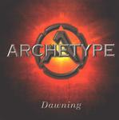

Home Artist links Label link

Archetype - Dawning
| Artist: | Archetype |
| Title: | Dawning |
| Label: | CDM Productions CDM 0001 |
| Length(s): | 67 minutes |
| Year(s) of release: | 2002 |
| Month of review: | [04/2002] |
Line up
Jamie Still - bass
Chris Matyus - guitars
Keith Zeigler - drums
Greg Wagner - vocals
Tracks
| 1) | Final Day | 6.32
|
| 2) | Hands Of Time | 4.28
|
| 3) | Dawning | 6.58
|
| 4) | Dissension's Wake | 5.25
|
| 5) | Inside Your Dreams | 6.08
|
| 6) | Premonitions | 6.48
|
| 7) | Visionary | 6.52
|
| 8) | Arisen | 5.08
|
| 9) | The Mind's Eye | 5.23
|
| 10) | Years Ago | 12.37
|
Summary
After the instrumental mini Archetype (1998) and the vocal version Hands Of Time (1999) Dawning is Archetype's third release, and first full length album. Matyus formed the band in 1997 after receiving a degree in Classical Guitar Performance with Still and Zeigler, joined by Wagner late in 1998.
The music
Archetype is a somewhat dangerous name, since any reviewer might get the idea of calling your music archetypical. This album, however, is not archetypical, from a strict point of view. Not so much because of the originality, but more because several types of metal are blended, of which prog metal unfortunately is not one. Most clear of those are power metal (with lyrics about for instance legions) and seemingly white metal (although the lyrics might be just pessimistic, instead of apocalyptic). These influences are not melted into a new style, though, quite to the contrary: the one track has the one style, the other has another.
Better pieces are Inside Your Dreams, which features a nice Spanish guitar intro, followed up pretty pointily. The climax of Premonitions has an apocalyptic feel, with shreeking guitars, nearing hysterical gulls. Nicely created tension. Years Ago has a certain epic character, not only because of its length, but also by its multi-sectioned build up.
Conclusion
When summing up this album, I find myself thinking a lot of things it's not: not bad, but not good either. Not original, but not boring either. Not badly played, but nothing remarkable either. And most of all: not something you would be interested in as a prog lover. This album is of interest mostly to the metal afficionado, and the occasional stray prog lover.
You might want to check out Archetype at http://www.archetype1.com
© Roberto Lambooy